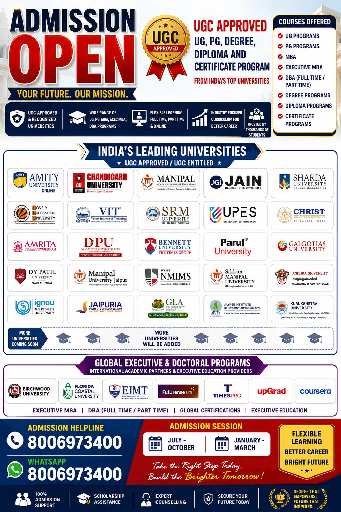

School SuccessConcepts, practice and regular assessment
A complete education and career guidance centre in Palam
Strong academics today. Future-ready skills for tomorrow.
Prayatnam Academy brings school coaching, AI-enabled learning, competitive exam support and university admission counselling under one professionally managed learning ecosystem.
Classes 1–12Academic coaching
Class 6–12Dedicated AI batches
UG to ExecutiveAdmission guidance
One Centre. Multiple Pathways.
AI & Digital SkillsApplied technology for students and professionals
Higher Education GuidanceProgramme selection and admission assistance
Competitive Exam SupportTest practice and structured preparation
Choose the right learning pathway
Clear programmes for every stage of education
No clutter and no confusing claims. Select the service that matches your current goal.
01
School Coaching
Academic support for Classes 1 to 12 with class-wise subject plans.
View coaching → 02AI & Computer Learning
AI-aligned subject learning and separate future-skills batches.
Explore AI courses → 03University Admission Counselling
Guidance for UG, PG, MBA, diploma, certificate and executive programmes.
View admission support → 04Competitive Exam Support
Test series and preparation support for selected government examinations.
Explore exam support →School coaching in Palam, New Delhi
Classes 1 to 12, organised by learning stage
Each group receives age-appropriate teaching, regular practice and guidance—not a one-size-fits-all classroom.
Classes 1–5
Foundation Learning
All subjects with reading, writing, mathematics, EVS, English, homework support and confidence building.
₹1,000/monthClasses 6–8
Complete Subject Coaching
All subjects with stronger conceptual understanding, school support, revision and regular practice.
₹1,500/monthClasses 9–10
Board-Focused Preparation
Mathematics, Science, Social Science and English with structured revision and assessment.
₹2,000/monthClasses 11–12
Senior Secondary Subjects
Mathematics, Physics, Chemistry and Humanities subjects with subject-wise mentoring.
₹1,200/subject/monthFees shown are standard monthly academic fees and may vary for specialised, individual or intensive batches.
AI integrated with regular education
Students learn the subject—and understand where it is used in AI.
We connect school knowledge with modern technology. Students discover how mathematics supports data and algorithms, how science connects with robotics and intelligent systems, and how language skills improve research, communication and responsible AI use.
- AI-assisted concept explanation and revision
- Real-world links between school subjects and technology
- Responsible use of AI for projects, research and learning
- Separate AI and computer batches for Classes 6 to 12
FoundationAI Tools & Digital Literacy
Applied LearningPython, Data & Automation
Advanced PathwayMachine Learning, GenAI & Agents
Higher education admission counselling
Find the right university, programme and learning mode
Our counselling desk helps students and working professionals compare programmes, understand eligibility, complete applications and make informed admission decisions.
India & International Programme Guidance
Speak to an Admission Counsellor
UG, PG, MBA, Executive MBA, Diploma, Certificate and Executive Education
Support is available for full-time, part-time, online and distance-learning options wherever offered by the institution and permitted under the applicable regulations.
Programme ShortlistingCompare course structure, duration, mode and career relevance.
Eligibility ReviewUnderstand academic, work-experience and document requirements.
Application AssistanceForm support, document checklist and application tracking.
Scholarship GuidanceInformation on available institutional offers and eligibility.

Universities and education partners featured in our counselling network
Availability depends on the programme, mode, intake and current admission cycle.
Amity University OnlineChandigarh UniversityManipal Academy of Higher EducationJAIN (Deemed-to-be University)Sharda UniversityLovely Professional UniversityVITSRM UniversityUPESCHRIST UniversityAmrita Vishwa VidyapeethamDr. D. Y. Patil VidyapeethBennett UniversityParul UniversityGalgotias UniversityDY Patil University Navi MumbaiManipal University JaipurNMIMSSikkim Manipal UniversityAndhra UniversityIGNOUJaipuria Institute of ManagementGLA UniversityJaypee Institute of Information TechnologyKurukshetra University
Important verification notice
Prayatnam Academy provides counselling and application assistance; the degree or certificate is awarded by the respective institution. Recognition or entitlement can differ by programme, mode and academic session. Students should independently verify the selected institution and programme on the official UGC/UGC-DEB portal and the university website before paying fees or confirming admission.
Verify on the official UGC-DEB portal ↗Competitive exam support
Structured practice for government exam aspirants
Preparation support may include general studies, computer awareness, topic practice and test series for selected SSC, banking, railway, police, state-level and other government examinations.
SSCBankingRailwayPoliceState ExamsComputer Tests
Why Prayatnam Academy
Personal attention backed by academic and technology experience
Prayatnam Academy is built for families who need clarity, consistency and modern learning support. Our approach combines disciplined teaching, practical technology exposure and transparent counselling.
Concept FirstStudents understand before they memorise.
Personal GuidanceSmall groups and focused mentoring.
Future RelevanceSchool learning connected with AI and careers.
Transparent AdviceClear programme, fee and eligibility guidance.
Frequently asked questions
Answers before you enrol
Contact the academy for current batch timings, seat availability and programme-specific fees.
Which school classes and subjects are available?
All-subject coaching is available for Classes 1–8. For Classes 9–10, the main subjects are Mathematics, Science, English and Social Science. For Classes 11–12, Mathematics, Physics, Chemistry and selected Humanities subjects are available.
Are AI classes included in regular coaching?
AI is used to create connections with regular subjects and improve learning. Separate structured AI and computer batches are also available for Classes 6–12.
Can working professionals receive university admission guidance?
Yes. Counselling is available for suitable UG, PG, MBA, Executive MBA, diploma, certificate and executive programmes, subject to eligibility and current institutional availability.
Does Prayatnam Academy award the university degree?
No. Prayatnam Academy is a counselling and admission-support centre. The respective university or awarding institution delivers the programme and awards the qualification.
How should I verify an online or distance programme?
Check the specific university, programme, mode and academic session on the official UGC/UGC-DEB portal and the institution's official website before admission.
Admissions and counselling
Let us help you choose the right next step.
Share the student's class or the programme you are considering. Our team will respond with the relevant batch, fee or admission guidance.
Call: 8006973400WhatsApp: 8006973400Raj Nagar 2, Palam, New Delhi – 110077prayatnamacademy@gmail.com